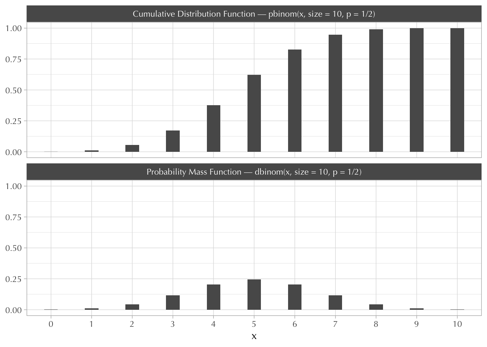

Set up
library(tidyverse)
theme_set(
theme_light(base_family = "Optima") +
theme(strip.background = element_rect(fill = "#595959"))
)A short tutorial.
andrés castro araújo
May 12, 2022
R has four built-in forms of working with probability distributions.
See ?distributions for a list of common distributions contained in R.
For example, to work with a normal distribution we have the following functions:
dnorm(): probability (density) function
pnorm(): cumulative distribution function
rnorm(): draw n samples from dnorm()
qnorm(): quantile distribution; this is the inverse of pnorm()
A common source of confusion comes from the difference between continuous random variables (e.g. a normal distribution) and discrete random variables (e.g. a binomial distribution).
For a discrete variable it’s easier to think about probability distributions first (or probability mass functions); then the cumulative distribution is just the cumulative sum of different probability masses.
For continuous variables it’s easier to think about cumulative distributions first; then the probability distribution (or probability density function) is just the derivative—or “slope”—of the cumulative distribution.
This will all make sense.
In this section we’ll use two distributions as examples.
The probability distribution of a binomial random variable comes from adding coin flips (also known as Bernoulli distributions). The Bernoulli distribution has two possible outcomes \(x = \{0, 1\}\) and one parameter \(p\) (which confusingly is also a probability).
For example, let’s suppose a coin is loaded and so \(p = 0.75\).
The probability mass function (PMF) of this Bernoulli distribution is as follows:
\[ f(x) = \Pr(X = x) = \begin{cases} 0.75 &\text{if} \ x = 1 \\\\ 0.25 &\text{if} \ x = 0 \\\\ 0 &\text{if} \ x = \text{anything else} \end{cases} \]
The cumulative distribution function (CDF) is as follows:
\[ F(x) = \Pr(X \leq x) = \begin{cases} 0 &\text{if} \ x < 1 \\ 0.25 &\text{if} \ x = 0 \\ 1 &\text{if} \ x = 1 \\ 1 &\text{if} \ x > 1 \end{cases} \]
Any CDF returns the probability that an outcome is less than or equal to \(x\). In other words, you’re simply adding up the probability masses for each possible outcome until you reach \(x\).
The binomial distribution
As mentioned earlier, the binomial distribution comes from adding \(n\) coin flips. For example, if you throw 3 coins then we have four possible outcomes \(x = \{0, 1, 2, 3\}\) and two parameters: \(p\) and \(n = 3\).
The probability (mass) function of this binomial distribution is then this:
\[ f(x) = \Pr(X = x) = \begin{cases} 1 \ (1 - p)^3 &\text{if} \ x = 0 \\ 3 \ p(1 - p)^2 &\text{if} \ x = 1 \\ 3 \ p^2(1-p) &\text{if} \ x = 2 \\ 1\ p^3 &\text{if} \ x = 3 \\ 0 &\text{if} \ x = \text{anything else} \end{cases} \]
The 1s and 3s come from counting the number of ways in which \(x\) can equal one of these numbers. This is not different from “the garden of forking data” stuff in McElreath (2020, pp. 20–27)
But this is not how you’ll see binomial distributions written out in the wild. We need new notation in order to write any binomial distribution, which we get by using the binomial coefficient:
\[ {n \choose x} = \frac{n!}{x! (n - x)!} \]
So the probability (mass) function of any binomial distribution is then this:
\[ f(x) = \Pr(X = x) = {n \choose x} p^x (1-p)^{n-x} \]
The cumulative distribution function is as follows:
\[ F(x) = \Pr(X \leq x) = \sum_{i = 0}^x {n \choose x} p^x (1-p)^{n-x} \]
For example, with \(n = 10\) and \(p = 0.5\), this is how they look:
tibble(x = 0:10) |>
mutate(
"Probability Mass Function — dbinom(x, size = 10, p = 1/2)" =
dbinom(x, size = 10, p = 1/2),
"Cumulative Distribution Function — pbinom(x, size = 10, p = 1/2)" =
pbinom(x, size = 10, p = 1/2)
) |>
mutate(x = factor(x)) |>
pivot_longer(!x, names_to = "distribution") |>
ggplot(aes(x, value)) +
geom_col(width = 1/3) +
facet_wrap(~distribution, ncol = 1) +
labs(y = NULL)
Note that the Bernoulli distribution is now a special case of the binomial distribution in which \(n = 1\).
This is what’s going on when you use the dbinom and pbinom functions:
The Bernoulli PMF is the same as the binomial PMF with \(n = 1\)
Bernoulli CDF
Binomial PMF with \(n=4\)
[1] 0.00000000 0.00390625 0.04687500 0.21093750 0.42187500 0.31640625 0.00000000Binomial CDF with \(n=4\)
[1] 0.00000000 0.00390625 0.05078125 0.26171875 0.68359375 1.00000000 1.00000000Note that because pbinom is just adding different pieces of dbinom together, we could have obtained the same results simply by adding.
Binomial CDF with \(n = 4\)
[1] 0.00000000 0.00390625 0.05078125 0.26171875 0.68359375 1.00000000 1.00000000Drawing random samples
rbinom is used to draw samples from dbinom. This makes doing math very easy. For example, suppose we have 12 coin flips—or a binomial distribution with \(n = 12\) and \(p = 0.5\).
What is the probability that \(x = 7\)?
What is the probability that \(x \leq 8\)?
What is the probability that \(x\) is \(1\) or \(4\) or \(9\)?
The well-known probability (density) distribution for a normal random variable has two parameters \(\mu\) and \(\sigma^2\).
It’s ugly:
\[ f(x) = \frac{1}{\sigma \sqrt{2 \pi}} \exp\bigg(- \frac{(x - \mu)^2}{2 \sigma^2}\bigg) \]
Note that \(f(x) \neq \Pr(X = x)\).
Because \(x\) is a real number (that ranges from \(-\infty\) to \(+\infty\)), the probability that \(x = 1\) is exactly the same as the probability that \(x = 0.9999...\) both are zero.
However, the cumulative distribution function (CDF) does have the same interpretation. If you add all the possible values until you reach \(x\) you get \(\Pr(X \leq x)\). BUT, because there exists an infinite amount of numbers between \(-\infty\) and \(x\), you can’t simply add. You have to integrate.
\[ F(x) = \Pr(X \leq x) = \int_{-\infty}^x f(x) dx \]
Assuming \(\mu = 0\) and \(\sigma = 2\), what is the probability that \(x\) is less than or equal to zero?
The following two chunks of code give the same answer:
[1] 0.50.5 with absolute error < 7.3e-07You can also get an approximate answer by drawing random samples with rnorm.
Knowing that the CDF is an integral, we can understand the PDF as the derivative of the CDF. (The derivative of an integral of a function is just the function itself). In other words, a probability density is the rate of change in cumulative probability at \(x\). The PDF is the “slope” of the CDF at \(x\). This means that if the cumulative probability is increasing rapidly, the density can easily exceed 1. But if we calculate the area under the density function, it will never exceed 1.
For example, compare the PDF and CDF of the exponential distribution. While the CDF eventually converges to 1, the density easily exceeds 1 at some points.
CDF:
PDF:
More examples:
What is the probability that \(x = 7\)?
What is the probability that \(3 < x < 7\)?
0.262085 with absolute error < 2.9e-15[1] 0.2657What is the probability that \(x \leq 8\)?
What is the probability that \(x\) is NOT between \(-2\) and \(2\)?
The inverse of a CDF is called a quantile function (\(Q = F^{-1}\)).
This is where we get stuff like the median:
\[ \underbrace{Q(0.5)}_\text{median} = x \iff \Pr(X \leq x) = 0.5 \]
Median example with the exponential distribution: